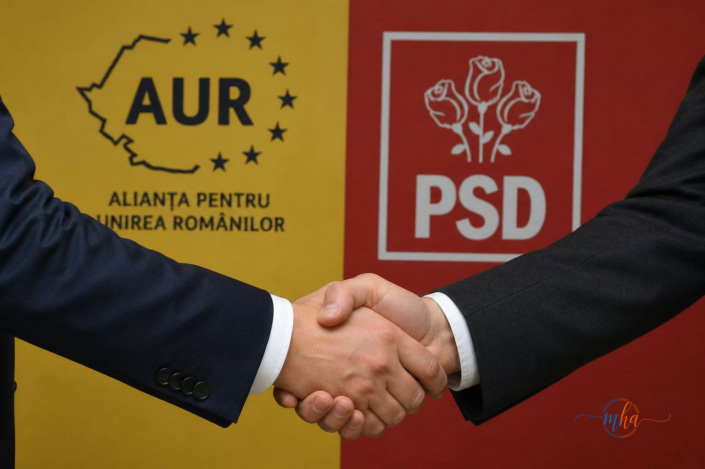

- AUR a declanșat oficial strângerea de semnături pentru moțiunea de cenzură
- PSD urmează să semneze documentul — acord tacit confirmat
- George Simion: moțiunea se depune după 1 Mai 2026
- Obiectiv declarat: alegeri anticipate și resetarea scenei politice
- Dacă trece: Guvernul Bolojan ar putea fi demis la începutul lunii mai
- Simion susține că actualul guvern nu mai are legitimitate
O mișcare politică de amploare se conturează la București: Alianța pentru Unirea Românilor (AUR) și Partidul Social Democrat (PSD) par să fi ajuns la un acord tacit pentru susținerea unei viitoare moțiuni de cenzură împotriva Guvernului condus de Ilie Bolojan. Semnalul este clar — opoziția își unește forțele într-un demers care ar putea schimba radical echilibrul de putere în România.
Potrivit unor mesaje interne transmise în rândul parlamentarilor AUR, partidul condus de George Simion a declanșat deja strângerea de semnături pentru depunerea moțiunii. Elementul decisiv care schimbă calculele politice: sprijinul PSD, care ar urma să semneze documentul — o mutare ce crește semnificativ șansele ca moțiunea să treacă în Parlament.
George Simion confirmă: depunere după 1 Mai
Liderul AUR, George Simion, a confirmat public intenția partidului, declarând la Realitatea Plus că moțiunea este în pregătire, urmând să fie depusă după data de 1 Mai. Simion a subliniat că obiectivul major al acestui demers este declanșarea alegerilor anticipate și resetarea scenei politice românești.
În argumentarea sa, liderul AUR a susținut că actualul guvern nu mai are legitimitate și că România are nevoie de o „reconciliere națională", în contextul unor tensiuni politice și economice tot mai accentuate. Totodată, Simion a lăsat să se înțeleagă că partidul este dispus să negocieze cu toate forțele politice pentru a asigura succesul demersului.

Ce înseamnă sprijinul PSD — calcule parlamentare
Cheia succesului moțiunii stă în matematica parlamentară. AUR singur nu dispune de suficiente voturi pentru a răsturna guvernul, dar adăugarea semnăturilor PSD schimbă fundamental ecuația. PSD rămâne cel mai mare partid din Parlament, iar voturile sale combinate cu cele ale AUR ar putea depăși pragul necesar pentru adoptarea moțiunii de cenzură.
Mesajele din interiorul AUR indică o mobilizare intensă pentru strângerea semnăturilor necesare, în timp ce sprijinul PSD conturează o posibilă colaborare mai amplă între cele două formațiuni, inclusiv la nivel guvernamental — în cazul în care moțiunea reușește și se deschide calea unor negocieri pentru o nouă majoritate parlamentară.
1 Mai
depunere anunțat
+AUR
răsturna guvernul
al AUR
Ce se întâmplă dacă moțiunea trece
Dacă moțiunea de cenzură va fi adoptată de Parlament, Guvernul Bolojan ar putea fi demis chiar la începutul lunii mai — o lovitură majoră pentru actuala coaliție de guvernare. Scenariul ar deschide calea unor negocieri politice complicate și, posibil, a formării unei noi majorități parlamentare sau a declanșării alegerilor anticipate.
Rămâne de văzut dacă această apropiere între PSD și AUR reprezintă doar o alianță de moment, tactică și conjuncturală, sau semnalul de start al unei noi construcții politice de durată în România. Urmărește MehedintiAzi.ro pentru toate actualizările pe această temă.
- Poate fi inițiată de cel puțin 1/4 din numărul total al deputaților și senatorilor
- Se dezbate în ședința comună a Camerei Deputaților și Senatului
- Adoptarea necesită votul majorității absolute (jumătate plus unu din numărul total al parlamentarilor)
- Dacă este adoptată, Guvernul este demis de drept
- Președintele desemnează un nou premier pentru consultări în vederea formării unui nou guvern